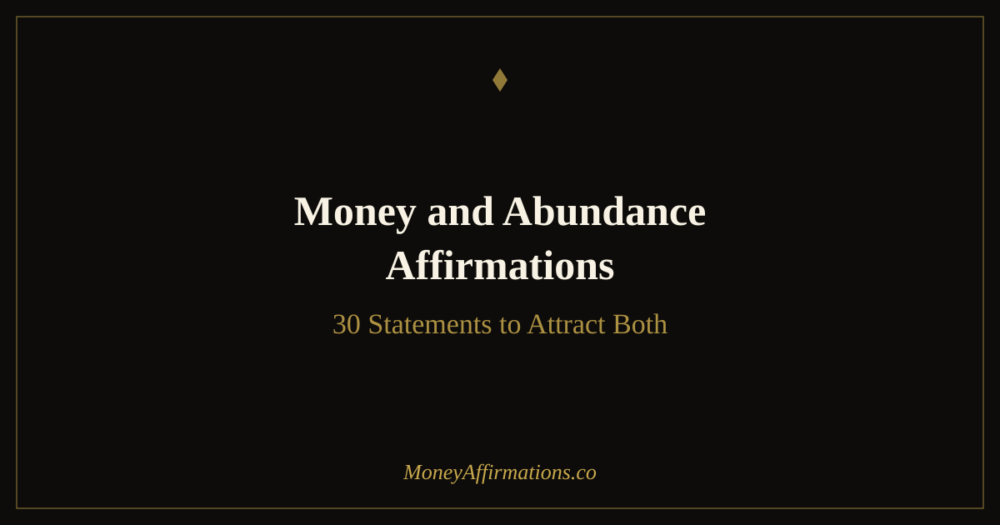

Money and Abundance Affirmations: 30 Statements to Attract Both

Money and abundance are often used interchangeably, but they describe two different things — and that difference matters. Money is the practical tool: it pays your rent, funds your dreams, and gives you choices. Abundance is the mindset that allows you to receive money freely, believe you are worthy of it, and trust that more is always possible. You can chase money with hustle and still feel perpetually broke at a soul level. You can cultivate abundance thinking and still avoid looking at your bank account. Neither alone is enough.
When you combine money and abundance affirmations, you address both layers at once — the behavior and the belief. You train your brain to seek opportunity while simultaneously dissolving the deep-seated feeling that wealth is for other people. These 30 affirmations are designed to work on both fronts, helping you move toward genuine financial wellbeing from the inside out.
What are money and abundance affirmations?
Money and abundance affirmations are positive, present-tense statements that combine two distinct but complementary intentions. Purely financial affirmations tend to focus on earning, saving, and attracting specific sums — they work with the practical mechanics of wealth. Abundance affirmations go deeper, reinforcing a sense of worthiness, openness, and trust in life's generosity. They shift your identity from someone who struggles with money to someone who naturally receives it.
Together, they are especially powerful for people who hold both a scarcity mindset and real-world financial goals. If you believe opportunity is limited (a money belief) and also believe you don't deserve what's available (an abundance belief), then you need affirmations that address both. This combined approach closes both gaps simultaneously — reinforcing that wealth exists in the world and that you are a worthy recipient of it.
30 money and abundance affirmations
- I attract money and abundance into my life with ease and joy.
- I am a powerful magnet for financial prosperity and limitless abundance.
- Money flows to me freely from expected and unexpected sources.
- I am worthy of wealth, and I welcome it into every area of my life.
- Abundance is my natural state, and I return to it every single day.
- I receive money with gratitude and let it flow through me generously.
- I am open to all the ways the universe delivers abundance to me.
- My mindset is aligned with wealth, and my actions reflect that alignment.
- I believe in my ability to create, attract, and sustain financial abundance.
- Every dollar I spend comes back to me multiplied many times over.
- I release all resistance to money and allow it to enter my life now.
- I am deeply grateful for the abundance that already surrounds me.
- Wealth expands in my life because I am willing to receive it.
- I deserve a life of financial freedom, and I am actively creating it.
- Money loves me, and I love money — we have a healthy, growing relationship.
- I trust that the universe always provides more than enough for my needs.
- My income grows because I show up with confidence, clarity, and purpose.
- I am grateful for money flowing into my life from multiple directions.
- Abundance is not something I have to earn through suffering — it is my birthright.
- I think abundantly, act abundantly, and experience abundance in my daily life.
- New opportunities to grow my wealth appear to me regularly and effortlessly.
- I am financially secure, deeply abundant, and at peace with money.
- I give generously and receive gratefully, knowing abundance only expands.
- My wealth grows because I am committed to my own financial wellbeing.
- I celebrate the success of others, knowing their abundance mirrors what is possible for me.
- I am aligned with the energy of money and abundance in everything I do.
- Financial opportunities recognize me and seek me out wherever I go.
- I hold wealth lightly, use it wisely, and let it grow continuously.
- My relationship with money is built on trust, gratitude, and positive expectation.
- I am both a creator of wealth and a steward of abundance for myself and others.
How to use these affirmations
The most effective way to work with these affirmations is to build a daily reset practice — a brief, intentional ritual that anchors your mindset at the start and end of each day. Each morning, before you check your phone or open your email, read through a handful of these statements slowly. Each evening, revisit the same ones before you sleep. This morning-and-evening repetition creates a bookend effect, training your subconscious to hold a wealth-aligned frame throughout the day.
Rather than working through all 30 at once, choose 5 that resonate most strongly with where you are right now. Read them aloud if possible — hearing your own voice adds a layer of conviction that silent reading cannot match. As you say each one, pause and genuinely feel the emotional state the words describe. Affirmations spoken without feeling are just words. The neurological shift happens when you pair the statement with the corresponding emotion: the ease, the gratitude, the sense of deserving.
Stay with your chosen 5 for at least a week before rotating. Consistency builds the neural pathways that make new beliefs feel true rather than aspirational. Over time, you will notice these mindsets arising naturally — not because you are reciting them, but because they have become how you actually think.
Why money and abundance work best together
Scarcity thinking is rarely one-dimensional. Research in behavioral economics and cognitive psychology shows it tends to operate on two distinct levels simultaneously. The first is a belief about the world: there is not enough money, opportunity, or success to go around. The second is a belief about the self: even if there were enough, I would not be the one to receive it. These two beliefs reinforce each other in a tight loop that is difficult to break with just one type of intervention.
Money affirmations are designed to dismantle the first layer. Statements like "money flows to me easily" and "new income streams appear regularly" challenge the scarcity narrative about the external world. They retrain the mind to notice opportunity rather than ignore it, to expect positive financial outcomes rather than brace for shortfalls.
Abundance affirmations address the second, deeper layer — the identity level. Statements about worthiness, openness, and deserving speak directly to the belief that you are not the kind of person wealth gravitates toward. This is what psychologists sometimes call the abundance identity: a stable inner sense of being someone for whom good things are natural and appropriate.
Using both types together creates a complete reprogramming loop. You update your beliefs about what the world offers (money affirmations) while simultaneously updating your beliefs about who you are in relation to it (abundance affirmations). Neither alone closes both gaps. Together, they work on abundance behavior and abundance identity in parallel — which is why the combination tends to produce faster, more durable shifts than either practice alone.
Tips to make them work faster
- Feel first, speak second. Before you say an affirmation, spend three seconds generating the emotion that goes with it — the relief of financial ease, the warmth of gratitude. The feeling activates the limbic system, which is where beliefs are stored, not the logical prefrontal cortex.
- Pair with evidence. After each affirmation session, write down one real example from your life that supports the statement. Even small evidence — a refund, a compliment, an unexpected opportunity — trains the brain to look for proof of abundance rather than proof of scarcity.
- Speak them at transitions. The moments just after waking and just before sleep are when the mind is most receptive to new programming. Use these windows deliberately rather than letting them be consumed by scrolling or worry.
- Stack with action. Affirmations work fastest when paired with aligned behavior. After your morning session, take one small financial action — review your budget, send one invoice, research one investment. The combination of belief and behavior compounds quickly.
- Track your resistance. When a particular affirmation triggers doubt or feels untrue, write down the counterbelief it surfaced. That resistance reveals exactly where your mindset work needs to go next — the strongest objections are the most valuable data.
Frequently Asked Questions
What is the difference between money affirmations and abundance affirmations?
Money affirmations focus on the practical, tangible side of finances — earning more, attracting income, and releasing fear around bills or debt. Abundance affirmations work at the identity level, reinforcing that you are worthy of receiving, that there is enough in the world for you, and that life itself is generous. Money affirmations address the "not enough exists" belief; abundance affirmations address the "I don't deserve it" belief. Using both together covers both layers of scarcity thinking.
How many affirmations should I use at once?
Choose 3 to 5 affirmations per session rather than cycling through all 30 at once. Repetition and emotional connection matter far more than quantity. Pick the statements that resonate most strongly with you right now, repeat them slowly and deliberately, and stay with them for at least a week before rotating to new ones. Depth of practice beats breadth every time.
Can these affirmations help if I am in debt?
Yes. Affirmations are not a magic fix for debt, but they are a powerful tool for changing your relationship with money — which directly affects the decisions you make. Scarcity thinking tends to produce avoidance behaviors: ignoring bank statements, overspending as emotional relief, or feeling too paralyzed to make a plan. Shifting your mindset toward worthiness and possibility makes it easier to face your finances clearly, stick to a budget, and take consistent action. Many people find that combining affirmations with a practical debt-payoff plan accelerates their progress in ways neither approach achieves alone.
Working with money and abundance affirmations together is one of the most complete approaches to financial mindset work available. If you want to go deeper, explore the full abundance affirmations collection — 80 carefully crafted statements organized into four themes to support every dimension of your relationship with abundance.